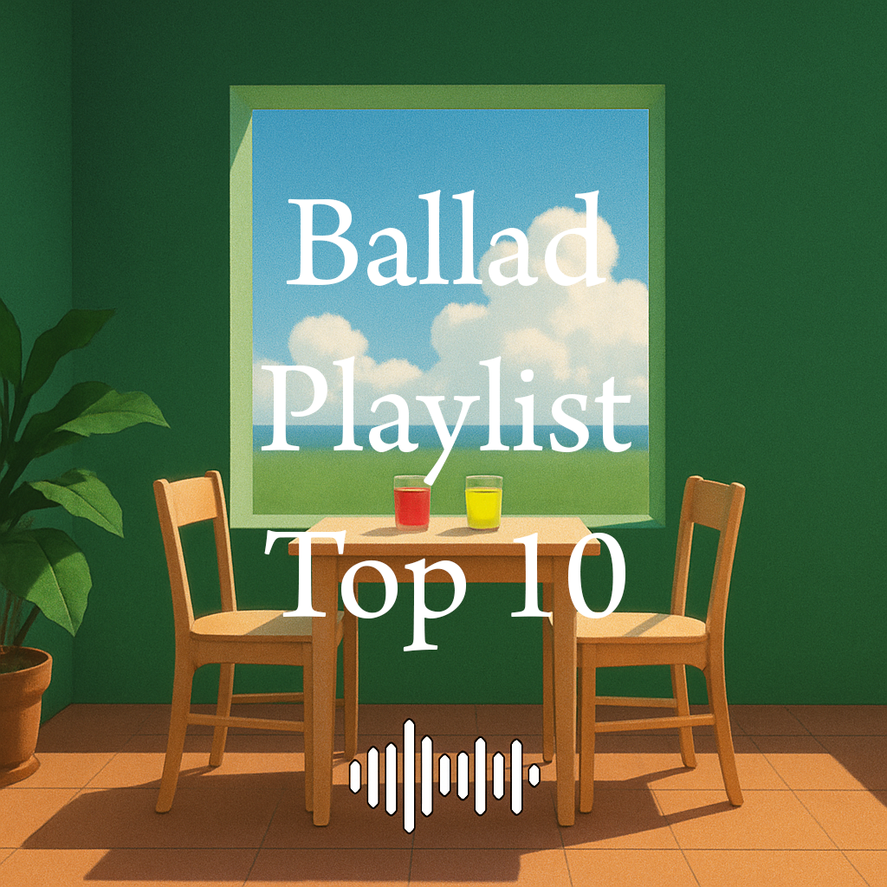

안녕하세요 라보엠입니다.
여러분은 노래방에 자주 가시나요? 지금도 노래방에서 가장 많이 선곡되고 있는 장르는 단연 발라드입니다. 감정을 섬세하게 표현할 수 있는 발라드는 여전히 많은 사랑을 받고 있으며, 최신 곡부터 롱런하는 명곡까지 다양하게 선택되고 있습니다. 이번 글에서는 2025년 상반기 기준 노래방 발라드 인기 차트 TOP 10을 선정하여 각 곡의 매력을 소개합니다. 감미로운 멜로디와 가사에 녹아든 진심! 노래방 마이크를 잡기 전, 이 글로 감성 세팅을 완료해보세요.

감성 가득한 2025년 노래방 발라드 추천곡 소개
1. 조째즈 – 모르시나요
감성 짙은 목소리로 사랑받는 조째즈의 대표곡. 원곡은 다비치가 불렀던 곡이지만, 조째즈의 리메이크는 한층 더 섬세한 감정선과 재해석이 돋보입니다. 이별의 아픔을 실감나게 전해주는 명곡입니다.
[조째즈] 모르시나요 노래 소개 가사
안녕하세요, 한스입니다.오늘은 2025년 상반기 음원 차트를 뜨겁게 달군 신인 가수 조째즈(ZO ZAZZ)의 데뷔곡 ‘모르시나요’를 소개합니다. 이 곡은 2013년 다비치가 발표했던 드라마 OST를 리메이
umm.la-bohe.me
2. 우디 – 어제보다 슬픈 오늘
현실적인 가사와 감미로운 멜로디가 어우러진 곡. 연인의 이별 후 공허한 감정을 표현한 곡으로, 몰입도 높은 발라드를 찾는 이들에게 적합합니다.
3. 아이유 – Never Ending Story
이문세의 원곡을 리메이크한 곡으로, 아이유 특유의 맑고 청아한 보컬이 돋보입니다. 다양한 세대에서 인기 있는 감성 발라드입니다.
[아이유] 꽃갈피 셋 Never Ending Story 노래 소개 가사 - 8월의 크리스마스
안녕하세요, 한스입니다.오늘은 8년 만에 돌아온 아이유의 리메이크 앨범, ‘꽃갈피 셋’의 타이틀곡 ‘Never Ending Story’를 소개하겠습니다. 부활의 명곡을 아이유만의 감성과 목소리로 새롭게
umm.la-bohe.me
4. 황가람 – 나는 반딧불
아날로그 감성과 잔잔한 기타 사운드가 돋보이는 곡. SNS에서 먼저 인기를 얻으며 노래방에서도 큰 반향을 일으킨 곡입니다.
나는 반딧불 - 황가람 유퀴즈 출연 중식이 밴드 원곡 노래 가사
안녕하세요 한스입니다.오늘은 최근 황가람의 리메이크로 다시 주목받고 있는 나는 반딧불의 원곡자, 중식이 밴드에 대해 소개해드리려고 합니다. 이 곡의 감동적인 메시지와 중식이 밴드만의
umm.la-bohe.me
5. 이무진 – 청혼하지 않을 이유를 못 찾았어
이무진 특유의 감성적 서사와 고백송으로서의 진심이 담긴 발라드. 노래방에서 감동을 주기에 제격인 곡입니다.
6. 악뮤 – 어떻게 이별까지 사랑하겠어
오랜 기간 사랑받고 있는 이별 발라드의 대표주자. 감성적 가사와 멜로디가 듀엣으로도 완성도 높게 부를 수 있습니다.
악뮤 어떻게 이별까지 사랑하겠어 널 사랑하는 거지 악동뮤지션 노래 가사
안녕하세요 음악 분야 크리에이터 한스입니다. 오늘은 악동뮤지션(이하 악뮤)의 명곡 '어떻게 이별까지 사랑하겠어, 널 사랑하는 거지'에 대해 소개해드리려고 합니다.이 노래는 2019년 9월 발매
umm.la-bohe.me
7. 이클립스 – 소나기
이별을 소나기에 비유한 감성적인 곡. 절제된 감정과 아름다운 멜로디로, 노래방 신흥 인기곡으로 자리잡고 있습니다.
MAMA 2024에 내린 변우석의 소나기
안녕하세요 음악 분야 크리에이터 한스입니다. 오늘은 2024 MAMA AWARDS에서 화제를 모은 배우 변우석의 소나기 무대에 대해 자세히 알아보겠습니다. 드라마 속 캐릭터선재에서 현실의 아티스트로
umm.la-bohe.me
8. 멜로망스 – 사랑인가봐
사랑의 시작을 노래한 곡으로, 따뜻하고 서정적인 멜로디가 특징입니다. 초보자도 부르기 좋은 추천곡입니다. 넷플릭스의 최신 인기 작품 케이팝 데몬 헌터스에도 삽입되며 다시 인기를 얻고 있습니다.
9. 너드커넥션 – 그대만 있다면
록발라드 특유의 파워풀함과 섬세한 감성이 공존하는 곡. 감정 몰입형 곡을 좋아하는 분들께 강력 추천합니다.
10. 임재현 – 비의 랩소디
폭발적인 고음과 공감 가는 가사가 어우러진 감성 발라드. 부르기 어렵지만 큰 감동을 줄 수 있는 대표곡입니다.
원곡의 감성을 다시 불러일으키는 리메이크의 매력
2025년에는 리메이크 곡들이 많이 있는데요, 새로운 해석을 통해 곡에 신선한 생명을 불어넣습니다. 황가람의 나는 반딧불이나 조째즈의 '모르시나요'는 원곡이 지닌 감성을 그대로 간직하면서도, 감정의 결을 더 섬세하게 표현하여 20~30대에게 깊은 인상을 남겼습니다. 아이유의 ‘Never Ending Story’ 역시 이문세의 원곡을 현대적인 감성으로 재해석해, 중장년층에게는 향수를, 젊은 세대에게는 새로운 감동을 줍니다. 이처럼 리메이크는 세대 간 공감과 감성을 동시에 자극하는 강력한 무기가 되는것 같습니다. 또한 리메이크 곡은 멜로디와 가사가 이미 대중에게 익숙해 빠르게 감정 이입이 가능하다는 점도 큰 장점입니다. 특히 노래방에서는 관객(청중)이 함께 부르거나 따라부르기 쉽기 때문에, 부르는 사람과 듣는 사람 모두가 만족할 수 있는 선곡이 될 수 있습니다.
맺음말
2025년의 노래방 발라드 차트는 감성, 진심, 그리고 공감으로 가득 찬 곡들이 주를 이루고 있습니다. 새로운 곡과 오래된 명곡이 공존하며, 다양한 감정선을 표현할 수 있어 노래방에서의 경험을 더욱 풍부하게 만듭니다. 위의 10곡을 미리 들어보고 연습해두면, 감동과 공감을 이끄는 최고의 무대를 만들 수 있지 않을까요? 오늘 바로 마이크를 잡아보세요!